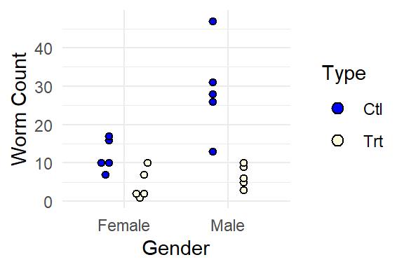
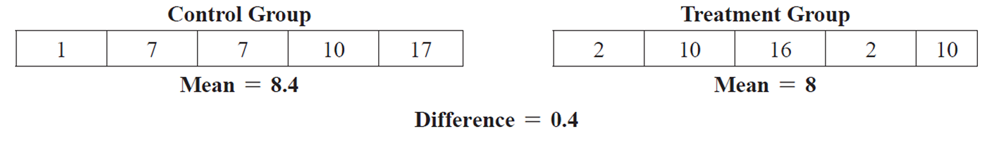
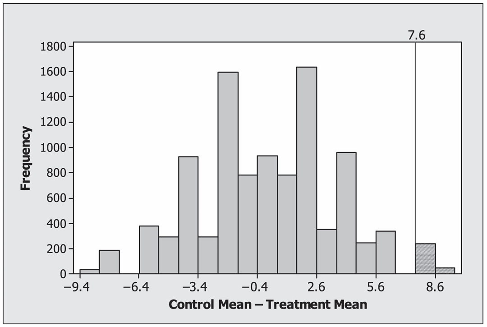
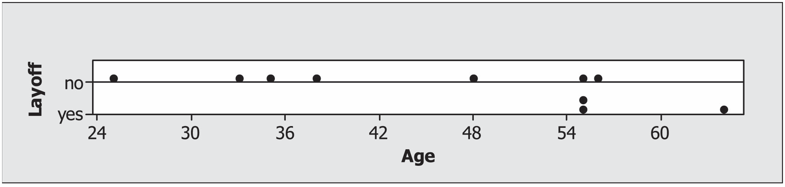
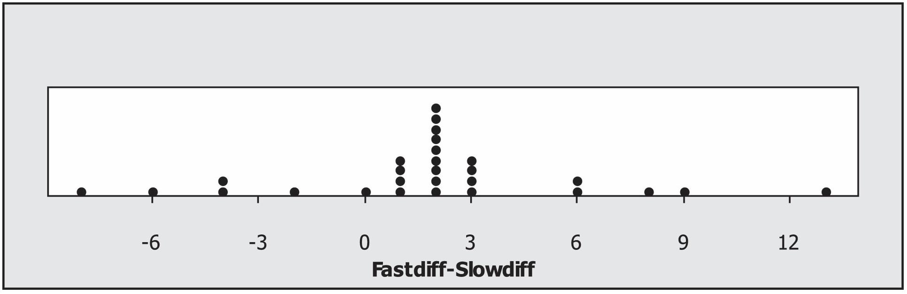
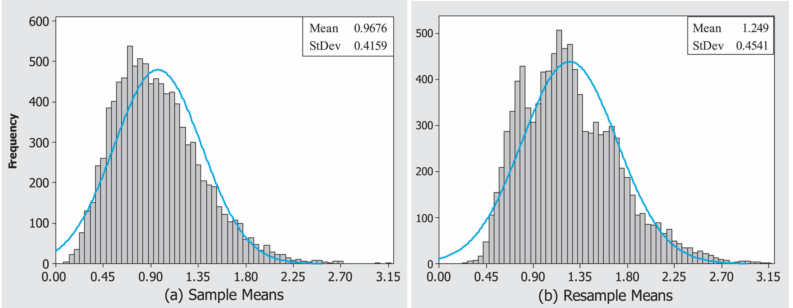

Making Decisions with Data
Chapter 1 Nonparametric Methods: Schistosomiasis
Randomization tests, permutation tests, and bootstrap methods are quickly gaining popularity as methods for conduct statistical inference. Why? These nonparametric methods require fewer assumptions and provide results that are often more accurate than those from traditional techniques using well-known distributions (such as the normal, t, or F distribution). These methods are based on computer simulations instead of distributional assumptions and thus are particularly useful when the sample data are skewed or if the sample size is small. In addition, nonparametric methods can be extended to other parameters of interest, such as the median or standard deviation, while the well known parametric methods described in introductory statistics courses are often restricted to just inference for the population mean.
We begin this chapter by comparing two treatments for a potentially deadly disease called Schistosomiasis (shis-tuh-soh-mahy-uh-sis). We illustrate the basic concepts behind nonparametric methods by using randomization tests to:
- Provide an intuitive description of statistical inference.
- Conduct a randomization test by hand
- Use software to conduct a randomization test
- Compare one-sided and two-sided hypothesis tests
- Making connections between randomization tests and conventional terminology
After working through the schistosomiasis investigation, you will have the opportunity to analyze several other data sets using randomization tests, permutation tests, bootstrap methods, and rank-based nonparametric tests.
1.1
Schistosomiasis is a disease occurring in humans caused by parasitic flatworms called schistosomes (skis’-tuhsohms). Schistosomiasis affects about 200 million people worldwide and is a serious problem in sub-Saharan Africa, South America, China, and Southeast Asia. The disease can cause death, but more commonly results in chronic and debilitating symptoms, arising primarily from the body’s immune reaction to parasite eggs lodged in the liver, spleen, and intestines.
Currently there is one drug, praziquantel (prā’zĭ-kwän’těl’), in common use for treatment of schistosomiasis; it is cheap and effective. However many organizations are worried about relying on a single drug to treat a serious disease which affects so many people worldwide. Drug resistance may have prompted a 1990s outbreak in Senegal, where cure rates were low. In 2007, several researchers published work involving a promising drug called K11777 that, in theory, might also treat schistosomiasis.
In this chapter, we will analyze data from this study where the researchers wanted to find out whether K11777 helps to stop schistosome worms from growing. In one phase of the study, 10 female laboratory mice and 10 male laboratory mice were deliberately infected with the schistosome parasite. Seven days after being infected with schistosomiasis, each mouse was given injections every day for 28 days. Within each sex, 5 mice were randomly assigned to a treatment of K11777 whereas the other 5 mice formed a control group injected with an equal volume of plain water. At day 49, the researchers euthanized the mice and measured both the number of eggs and the numbers of worms in the mice livers. Both numbers were expected to be lower if the drug was effective.
Table 1.1 gives the worm count for each mouse. An individual value plot of the data is shown in Figure 1.1. Notice that the treatment group has fewer worms than the control group for both females and males.

Figure 1.1: Individual value plot of the worm count data
NOTE There is a difference between individual value plots and dotplots. In dotplots (such as Figures 1.3 and 1.4 shown later in this chapter), each observation is represented by a dot along a number line (x-axis). When values are close or the same, the dots are stacked. Dotplots can be used in place of histograms when the sample size is small. Individual value plots, as shown in Figure 1.1, are used to simultaneously display each observation for multiple groups. They can be used instead of boxplots to identify outliers and distribution shape, especially when there are relatively few observations.
Describing the Data
Use Figure 1.1 to visually compare the number of worms for the treatment and control groups for both the male and the female mice. Does each of the four groups appear to have a similar center and a similar spread? Are there any outliers (extreme observations that don’t seem to fit with the rest of the data)?
Calculate appropriate summary statistics (e.g., the median, mean, standard deviation, and range) for each of the four groups. For the female mice, calculate the difference between the treatment and control group means. Do the same for the male mice.
The descriptive analysis in Questions 1 and 2 points to a positive treatment effect: K11777 appears to have reduced the number of parasitic worms in this sample. But descriptive analysis is usually only the first step in ascertaining whether an effect is real; we often conduct a significance test or create a confidence interval to determine if chance alone could explain the effect.
Most introductory statistics courses focus on hypothesis tests that involve using a normal, t-, chi-square or F-distribution to calculate the \(\scriptstyle p\)-value. These tests are often based on the central limit theorem. In the schistosomiasis study, there are only five observations in each group. This is a much smaller sample size than is recommended for the central limit theorem, especially given that Figure 1.1 indicates that the data may not be normally distributed. Since we cannot be confident that the sample averages are normally distributed, we will use a distribution-free test, also called a nonparametric test. Such tests do not require the distribution of our sample statistic to have any specific form and are often useful in studies with very small sample sizes.
MATHEMATICAL NOTE For any population with mean \(\scriptstyle \mu\) and finite standard deviation \(\scriptstyle \sigma\), the central limit theorem states that the sample mean \(\scriptstyle \bar{x}\) from an independent and identically distributed sample tends to follow the normal distribution if the sample size is large enough. The mean of \(\scriptstyle \bar{x}\) is the same as the population mean, \(\scriptstyle \mu\), while the standard deviation of x is \(\scriptstyle \sigma / \sqrt{n}\), where \(\scriptstyle n\) is the sample size.
We will use a form of nonparametric statistical inference known as a randomization hypothesis test to analyze the data from the schistosomiasis study. Randomization hypothesis tests are significance tests that simulate the random allocation of units to treatments many times in order to determine the likelihood of observing an outcome at least as extreme as the one found in the actual study.
We will introduce the basic concepts of randomization tests in a setting where units (mice in this example) are randomly allocated to a treatment or control group. Using a significance test, we will decide if an observed treatment effect (the observed difference between the mean responses in the treatment and control) is “real” or if “random chance alone” could plausibly explain the observed effect. The null hypothesis states that “random chance alone” is the reason for the observed effect. In this initial discussion, the alternative hypothesis will be onesided because we want to show that the true treatment mean (\(\scriptstyle \mu_{treatment}\)) is less than the true control mean (\(\scriptstyle \mu_{control}\)). Later, we will expand the discussion to consider modifications needed to deal with two-sided alternatives.
1.2
Whether they take the form of significance tests or confidence intervals, inferential procedures rest on the fundamental question for inference: “What would happen if we did this many times?” Let’s unpack this question in the context of the female mice in the schistosomiasis study. We observed a difference in means of 7.6 = 12.00 - 4.40 worms between control and treatment groups. While we expect that this large difference reflects the effectiveness of the drug, it is possible that chance alone could explain this difference. The “chance alone” position is usually called the null hypothesis and includes the following assumptions:
- The number of parasitic worms found in the liver naturally varies from mouse to mouse.
- Whether or not the drug is effective, there clearly is variability in the responses of mice to the infestation of schistosomes.
- Each group exhibits this variability, and even if the drug is not effective, some mice do better than others.
- The only explanation for the observed difference of 7.6 worms in the means is that the random allocation randomly placed mice with larger numbers of worms in the control group and mice with smaller numbers of worms in the treatment group.
In this study, the null hypothesis is that the treatment has no effect on the average worm count, and it is denoted as
Another way to write this null hypothesis is
The research hypothesis (the treatment causes a reduction in the average worm count) is called the alternative hypothesis and is denoted \(\scriptstyle H_a\) (or \(\scriptstyle H_1\)). For example,
Another way to write this alternative hypothesis is
Alternative hypotheses can be “one-sided, greater than” (as in this investigation), “one-sided, less-than” (the treatment causes an increase in worm count), or “two-sided” (the treatment mean is different, in one direction or the other, from the control mean). We chose to test a one-sided hypothesis because there is a clear research interest in one direction. In other words, we will take action (start using the drug) only if we can show that K11777 reduces the worm count.
Conducting a Randomization Test by Hand
- To get a feel for the concept of a \(\scriptstyle p\)-value, write each of the female worm counts on an index card. Shuffle the 10 index cards, and then draw five cards at random (without replacement). Call these five cards the treatment group and the five remaining cards the control group. Under the null hypothesis (i.e. the treatment has no effect on worm counts), this allocation mimics precisely what actually happened in our experiment, since the only cause of group differences is the random allocation. Calculate the mean of the five cards representing the treatment group and the mean of the five cards representing the control group. Then find the difference between the control and treatment group means that you obtained in your allocation. To be consistent, take the control group mean minus the treatment group mean. Your work should look similar to the following simulation:

If you were to do another random allocation, would you get the same difference in means? Explain.
Now, perform nine more random allocations, each time computing and writing down the difference in mean worm count between the control group and the treatment group. Make a dotplot of the 10 differences. What proportion of these differences are 7.6 or larger?
If you performed the simulation many times, would you expect a large percentage of the simulations to result in a mean difference greater than 7.6? Explain.
The reasoning in the previous activity leads us to the randomization test and an interpretation of the fundamental question for inference. The fundamental question for this context is as follows: “If the null hypothesis were actually true and we randomly allocated our 10 mice to treatment and control groups many times, what proportion of the time would the observed difference in means be as big as or bigger than 7.6?”
This long-run proportion is a probability that statisticians call the \(\scriptstyle p\)-value of the randomization test. The \(\scriptstyle p\)-values for most randomization tests are found through simulations. Despite the fact that simulations do not give exact \(\scriptstyle p\)-values, they are usually preferred over the tedious and time-consuming process of listing all possible outcomes. Researchers usually pick a round number such as 10,000 repetitions of the simulation and approximate the \(\scriptstyle p\)-value accordingly. Since this \(\scriptstyle p\)-value is an approximation, it is often referred to as the empirical \(\scriptstyle p\)-value.
NOTE: Many researchers include the observed value as one of the possible outcomes. In this case, N = 9999 iterations are typically used and the \(\scriptstyle p\)-value is calculated as (X + 1)/(9999 + 1). The results are very similar whether X/10,000 or (X + 1)/(9999 + 1) is used. Including the observed value as one of the possible allocations is a more conservative approach and protects against getting a \(\scriptstyle p\)-value of 0. Our observation from the actual experiment provides evidence that the true \(\scriptstyle p\)-value is greater than zero.
1.3
While physical simulations (such as the index cards activity) help us understand the process of computing an empirical \(\scriptstyle p\)-value, using computer software is a much more efficient way of producing an empirical \(\scriptstyle p\)-value based on a large number of iterations. If you are simulating 10 random allocations, it is just as easy to use index cards as a computer. However, the advantage of a computer simulation is that 10,000 random allocations can be conducted in almost the same amount of time it takes to simulate 10 allocations. In the following steps, you will develop a program to calculate an empirical \(\scriptstyle p\)-value.
Using Computer Simulations to Conduct a Hypothesis Test
Use the technology instructions with this text to insert the schistosomiasis data into a statistical software package and randomly allocate each of the 10 female worm counts to either the treatment or the control group.
Take the control group average minus the K11777 treatment group average.
Use the instructions to write a program, function, or macro to repeat the process 10,000 times. Count the number of simulations where the difference between the group averages (control minus K11777) is greater than or equal to 7.6, divide that count by 10,000, and report the resulting empirical \(\scriptstyle p\)-value.
Create a histogram of the 10,000 simulated differences between group means and comment on the shape of the histogram. This histogram, created from simulations of a randomization test, is called an empirical randomization distribution. This distribution describes the frequency of each observed difference (between the control and treatment means) when the null hypothesis is true.
Based on your results in Questions 9 and 10 and assuming the null hypothesis is true, about how frequently do you think you would obtain a mean difference as large as or larger than 7.6 by random allocation alone?
Does your answer to Question 11 lead you to believe the “chance alone” position (i.e., the null hypothesis that the mean worm count is the same for both the treatment and the control), or does it lead you to believe that K11777 has a positive inhibitory effect on the schistosome worm in female mice? Explain.
Figure 1.2 shows a histogram resulting from the previous activity. A computer simulation of Question 9 resulted in a \(\scriptstyle p\)-value of 281/10,000 = 0.0281. This result shows that random allocation alone would produce a mean group difference as large as or larger than 7.6 only about 3% of the time, suggesting that something other than chance is needed to explain the difference in group means. Since the only other distinction between the groups is the presence or absence of treatment, we can conclude that the treatment causes a reduction in worm counts.
We conducted four more simulations, each with 10,000 iterations, which resulted in \(\scriptstyle p\)-values of 0.0272, 0.0282, 0.0268, and 0.0285. When the number of iterations is large, the empirical randomization distribution (such as the histogram created in Question 10) provides a precise estimate of the likelihood of all possible values of the difference between the control and treatment means. Thus, when the number of iterations is large, well-designed simulation studies result in empirical \(\scriptstyle p\)-values that are fairly accurate. The larger the numberof iterations (i .e., randomizations) within a simulation study, the more precise the \(\scriptstyle p\)-value is.

Figure 1.2: Histogram showing the results of a schistosomiasis simulation study. In this simulation, 281 out of 10,000 resulted in a difference greater than or equal to 7.6..
Because the sample sizes in the schistosomiasis study are small, it is possible to apply mathematical methods to obtain an exact \(\scriptstyle p\)-value for this randomization test. An exact \(\scriptstyle p\)-value can be calculated by writing down the set of all possibilities (assuming each possible outcome is equally likely under the null hypothesis) and then calculating the proportion of the set for which the difference is at least as large as the observed difference.
In the schistosomiasis study, this requires listing every possible combination in which five of the ten female mice can be allocated to the treatment (and the other five assigned to the control). There are 252 possible combinations. For each of these combinations, the difference between the treatment and control means is then calculated. The exact \(\scriptstyle p\)-value is the proportion of times in which the difference in the means is at least as large as the observed difference of 7.6 worms. Of these 252 combinations, six have a mean difference of 7.6 and one has a mean difference greater than 7.6 (namely 8.8). Since all 252 of these random allocations are equally likely, the exact \(\scriptstyle p\)-value in this example is 7/252 = 0.0278. However, most real studies are too large to list all possible samples. Randomization tests are almost always adequate, providing approximate \(\scriptstyle p\)-values that are close enough to the true \(\scriptstyle p\)-value.
CAUTION: Conducting a two-sample t-test on the female mice provides a \(\scriptstyle p\)-value of 0.011. This \(\scriptstyle p\)-value of 0.011 is accurate only if the observed test statistic (i.e., the difference between means) follows appropriate assumptions about the distribution. Figure 1.2 demonstrates that the distributional assumptions are violated. While the randomization test provides an approximate \(\scriptstyle p\)-value “close to 0.0278,” it provides a much better estimate of the exact \(\scriptstyle p\)-value than does the two-sample t-test. Note that each of the five simulations listed gave a \(\scriptstyle p\)-value closer to the exact \(\scriptstyle p\)-value than the one given by the two-sample t-test.
Sometimes we have some threshold \(\scriptstyle p\)-value at or below which we will reject the null hypothesis and conclude in favor of the alternative. This threshold value is called a significance level and is usually denoted by the Greek letter alpha (\(\scriptstyle \alpha\)). Common values are \(\scriptstyle \alpha\) = 0.05 and \(\scriptstyle \alpha\) = 0.01, but the value will depend heavily on context and on the researcher’s assessment of the acceptable risk of stating an incorrect conclusion. When the study’s \(\scriptstyle p\)-value is less than or equal to this significance level, we state that the results are statistically significant at level \(\scriptstyle \alpha\). If you see the phrase “statistically significant” without a specification of \(\scriptstyle \alpha\) the writer is most likely assuming \(\scriptstyle \alpha\) = 0.05, for reasons of history and convention alone. However, it is best to show the \(\scriptstyle p\)-value instead of simply stating a result is significant at a particular \(\scriptstyle \alpha\)-level.
1.4
The direction of the alternative hypothesis is derived from the research hypothesis. In this K11777 study, we enter the study expecting a reduction in worm counts and hoping the data will bear out this expectation. It is our expectation, hope, or interest that drives the alternative hypothesis and the randomization calculation. Occasionally, we enter a study without a firm direction in mind for the alternative, in which case we use a two-sided alternative. Furthermore, even if we hope that the new treatment will be better than the old treatment or better than a control, we might be wrong—it may be that the new treatment is actually worse than the old treatment or even harmful (worse than the control). Some statisticians argue that a conservative objective approach is to always consider the two-sided alternative. For a two-sided test, the \(\scriptstyle p\)-value must take into account extreme values of the test statistic in either direction (no matter which direction we actually observe in our sample data)
We will now make our definition of the \(\scriptstyle p\)-value more general to allow for a wider variety of significance testing situations. The \(\scriptstyle p\)-value is the probability of observing a group difference as extreme as or more extreme than the group difference actually observed in the sample data, assuming that there is nothing creating group differences except the random allocation process.
This definition is consistent with the earlier definition for one-sided alternatives, as we can interpret extreme to mean either greater than or less than, depending on the direction of the alternative hypothesis. But in the two-sided case, extreme encompasses both directions. In the K11777 example, we observed a difference of 7.6 between control and treatment group means. Thus, the two-sided p-value calculation is a count of all instances among the 10,000 replications where the randomly allocated mean difference is either as small as or smaller than -7.6 worms ( \(\scriptstyle \leq\) -7.6) or as great as or greater than 7.6 worms (\(\scriptstyle \geq\) 7.6). This is often written as |diff| \(\scriptstyle \geq\) 7.6.
A Two-Sided Hypothesis Test
Run the simulation study again to find the empirical \(\scriptstyle p\)-value for a two-sided hypothesis test to determine if there is a difference between the treatment and control group means for female mice.
Is the number of simulations resulting in a difference greater than or equal to 7.6 identical to the number of simulations resulting in a difference less than or equal to -7.6? Explain why these two values are likely to be close but not identical.
Explain why you expect the \(\scriptstyle p\)-value for the two-sided alternative to be about double that for the onesided alternative. Hint: You may want to look at Figure 1.2
Using the two-sided alternative hypothesis, the two-sample t-test provides a \(\scriptstyle p\)-value of 0.022.1 This \(\scriptstyle p\)-value would provide strong evidence for rejecting the assumption that there is no difference between the treatment and the control (null hypothesis). However, this \(\scriptstyle p\)-value should not be used to draw conclusions about this study. Explain why.
For the above study, a simulation involving 100,000 iterations provided an empirical \(\scriptstyle p\)-value of 0.0554. Again, because this particular data set is small, all 252 possible random allocations can be listed to find that the exact two-sided \(\scriptstyle p\)-value is 14/252 = 0.0556.
1.5
The key question in this study is whether K11777 will reduce the spread of a common and potentially deadly disease. The result that you calculated from the one-sided randomization hypothesis test should have been close to the exact \(\scriptstyle p\)-value of 0.0278. This small \(\scriptstyle p\)-value allows you to reject the null hypothesis and conclude that the worm counts are lower in the female treatment group than in the female control group. In every study, it is important to consider how random allocation and random sampling impact the conclusions.
More importantly, the results have not shown that this new drug will have the same impact on humans as it does on mice. In addition, even though we found that K11777 does cause a reduction in worm counts, we did not specifically show that it will reduce the spread of the disease. Is the disease less deadly if only two worms are in the body instead of 10? Statistical consultants aren’t typically expected to know the answers to these theoretical, biological, or medical types of questions, but they should ask questions to ensure that the study conclusions match the hypothesis that was tested. In most cases, drug tests require multiple levels of studies to ensure that the drug is safe and to show that the results are consistent across the entire population of interest. While this study is very promising, much more work is needed before we can conclude that K11777 can reduce the spread of schistosomiasis in humans.
1.6
The random allocation of experimental units (e.g., mice) to groups provides the basis for statistical inference in a randomized comparative experiment. In the schistosomiasis K11777 treatment study, we used a significance test to ascertain whether cause and effect was at work. In the context of the random allocation study design, we called our significance test a randomization test.
In observational studies, subjects are not randomly allocated to groups. In this context, we apply the same inferential procedures as in the previous experiment, but we commonly call the significance test a permutation test rather than a randomization test.2 More importantly, in observational studies, the results of the test cannot typically be used to claim cause and effect; a researcher should exhibit more caution in the interpretation of results.
NoteThe permutation test does not require that the data (or the sampling distribution) follow a normal distribution. However, the null hypothesis in a permutation test assumes that samples are taken from two populations that are similar. So, for example, if the two population variances are very different, the \(\scriptstyle p\)-value of a permutation test may not be reliable. However, the two-sample t-test (taught in most introductory courses) allows us to assume unequal variances.
Age Discrimination Study
Westvaco is a company that produces paper products. In 1991, Robert Martin was working in the engineering department of the company’s envelope division when he was laid off in Round 2 of several rounds of layoffs by the company.\(^3\) He sued the company, claiming to be the victim of age discrimination. The ages of the 10 workers involved in Round 2 were: 25, 33, 35, 38, 48, 55, 55, 55, 56, and 64. The ages of the three people laid off were 55, 55, and 64.
Figure 1.3 shows a comparative dotplot for age by layoff category. This dotplot gives the impression that Robert Martin may have a case: It appears as if older workers were more likely to be laid off. But we know enough about variability to be cautious.

Figure 1.3: Dotplot of age in years of worker versus layoff (whether he or she was laid off).
Is There Evidence of Age Discrimination?
Data set:
Conduct a permutation test to determine whether the observed difference between means is likely to occur just by chance. Use
Ageas the response variable andLayoffas the explanatory variable. Here we are interested in only a one-sided hypothesis test to determine if the mean age of people who were laid off is higher than the mean age of people who were not laid off.Modify the program/macro you created in Question 17 to conduct a one-sided hypothesis test to determine if the median age of people who were laid off is higher than the median age of people who were not laid off. Report the \(\scriptstyle p\)-value and compare your results to those in Question 17.
Since there was no random allocation (i.e., people were not randomly assigned to a layoff group), statistical significance does not give us the right to assert that greater age is causing a difference in being laid off. The null hypothesis in this context becomes “The observed difference could be explained as if by random allocation alone.” That is, we proceed as any practicing social scientist must when working with observational data. We “imagine” an experiment in which workers are randomly allocated to a layoff group and then determine if the observed average difference between the ages of laid-off workers and those not laid off is significantly larger than would be expected to occur by chance in a randomized comparative experiment.
While age could be the cause for the difference—hence proving an allegation of age discrimination— there are many other possibilities (i.e., extraneous variables), such as the educational levels of the workers, their competence to do the job, and ratings on past performance evaluations. Rejecting the “as if by random allocation” hypothesis in the nonrandomized context can be a useful step toward establishing causality; however, it cannot establish causality unless the extraneous variables have been properly accounted for.
In the actual court case, data from all three rounds of layoffs were statistically analyzed. The analysis showed some evidence that older people were more likely to be laid off; however, Robert Martin ended up settling out of court.
1.7
The ideas developed in this chapter can be extended to other study designs, such as a basic two-variable design called a matched pairs design. In a matched pairs design, each experimental unit provides both measurements in a study with two treatments (one of which could be a control). Conversely, in the completely randomized situation of the schistosomiasis K11777 treatment study, half the units were assigned to control and half to treatment; no mouse received both treatments.
Music and Relaxation
Grinnell College students Anne Tillema and Anna Tekippe conducted an experiment to study the effect of music on a person’s level of relaxation. They hypothesized that fast songs would increase pulse rate more than slow songs. The file called Music contains the data from their experiment. They decided to use a person’s pulse rate as an operational definition of the person’s level of relaxation and to compare pulse rates for two selections of music: a fast song and a slow song. For the fast song they chose “Beyond” by Nine Inch Nails, and for the slow song they chose Rachmaninoff’s “Vocalise.” They recruited 28 student subjects for the experiment.
Anne and Anna came up with the following experimental design. Their fundamental question involved two treatments: (1) listening to the fast song and (2) listening to the slow song. They could have randomly allocated 14 subjects to hear the fast song and 14 subjects to hear the slow song, but their more efficient approach was to have each subject provide both measurements. That is, each subject listened to both songs, giving rise to two data values for each subject, called a matched pairs. Randomization came into play when it was decided by a coin flip whether each subject would listen first to the fast song or the slow song.
NOTE There are several uses of randomness mentioned in this chapter. The emphasis of this chapter is on the use of for statistical inference. Most introductory statistics courses discuss random from a population, which allows the results of a specific study to be generalized to a larger population. In experiments, units are which allows researchers to make statements about causation. In this example, Anne and Anna to prescribe two conditions on a single subject.
Specifically, as determined by coin flips, half the subjects experienced the following procedure:
- one minute of rest; measure pulse (prepulse)
- listen to fast song for 2 minutes; measure pulse for second minute (fast song pulse)
- rest for one minute
- listen to slow song for 2 minutes; measure pulse for second minute (slow song pulse).
The other half of the subjects experienced the procedure the same way except that they heard the slow song first and the fast song second.
Each subject provided two measurements of interest for analysis: (1) fast song pulse minus prepulse and (2) slow song pulse minus prepulse. In the data file, these two measurements are called Fastdiff and Slowdiff, respectively.
Figure 1.4 shows a dotplot of the 28 Fastdiff-minus-Slowdiff values. Notice that positive numbers predominate and the mean difference is 1.857 beats per minute, both suggesting that the fast song does indeed heighten response (pulse rate) more than the slow song. We need to confirm this suspicion with a randomization test.
To perform a randomization test, we mimic the randomization procedure of the study design. Here, the randomization determined the order in which the subject heard the songs, so randomization is applied to the two measurements of interest for each subject. To compute a \(\scriptstyle p\)-value, we determine how frequently we would obtain an observed difference as large as or larger than 1.857.

Figure 1.4: Dotplot of the difference in pulse rates for each of the 28 subjects.
Testing the Effect of Music on Relaxation
Data set: Music
CAUTION: The type of randomization in Question 20 does not account for extraneous variables such as a great love for Nine Inch Nails on the part of some students or complete boredom with this band on the part of others (i.e., “musical taste” is a possible confounder that randomizing the order of listening cannot randomize away). There will always be a caveat in this type of study, since we are rather crudely letting one Nine Inch Nails song “represent” fast songs.}
1.8
Bootstrapping is another simulation technique that is commonly used to develop confidence intervals and hypothesis tests. Bootstrap techniques are useful because they generalize to situations where traditional methods based on the normal distribution cannot be applied. For example, they can be used to create confidence intervalsand hypothesis tests for any parameter of interest, such as a median, ratio, or standard deviation. Bootstrap methods differ from previously discussed techniques in that they sample with replacement (randomly draw an observation from the original sample and put the observation back before drawing the next observation).
Permutation tests, randomization tests, and bootstrapping are often called resampling techniques because, instead of collecting many different samples from a population, we take repeated samples (calledr esamples) from just one random sample.
Creating a Sampling Distribution and a Bootstrap Distribution
Data set: ChiSq
In many real-world situations, the process used in Question 21 is not practical because collecting more than one simple random sample is too expensive or time consuming. While the approach in Question 22 is computer intensive, it is simple and convenient since it uses only one simple random sample. The key idea behind bootstrap methods is the assumption that the original sample represents the population, so resamples from the one simple random sample can be used to represent samples from the population, as is done in Question 22. Thus, the bootstrap distribution provides an approximation of the sampling distribution.
Most traditional methods of statistical inference involve collecting one sample and calculating the sample mean. Then, based on the central limit theorem, assumptions are made about the shape and spread of the sampling distribution. In Question 22 we used one sample to calculate the sample mean and then used the bootstrap distribution to estimate the shape and spread of the sampling distribution.
The central limit theorem tells us about the shape and spread of the sample mean. A key advantage of the bootstrap distribution is that it works for any parameter of interest. Thus, the bootstrap distribution can be used to estimate the shape and spread for any sampling distribution of interest.
CAUTION: When sample sizes are small, one simple random sample may not represent the population very well.Ho wever, with larger sample sizes, the bootstrap distribution does represent the sampling distribution.}
Figure 1.5 shows the sampling distribution and the bootstrap distribution when a sample size of 10 is used to estimate the mean of the ChiSq data. Notice that the spreads for both histograms are roughly equivalent. The central limit theorem tells us that the standard deviation of the sampling distribution (the distribution of \(\scriptstyle \bar{x}\) ) should be \(\scriptstyle \sigma / \sqrt{n}\) = \(\scriptstyle 1.3153/ \sqrt{10}\) = 0.4159. The standard deviation of the bootstrap distribution is 0.4541, which is a reasonable estimate of the standard deviation of the sampling distribution. In addition, both graphs have similar, right-skewed shapes. The strength of the bootstrap method is that it provides accurate estimates of the shape and spread of the sampling distribution. In general, histograms from the bootstrap distribution will have a similar shape and spread as histograms from the sampling distribution.

Figure 1.5: (a) The sampling distribution of the sample mean. The histogram is based on the mean of 10,000 samples of size 10 from the ChiSq data. (b) The bootstrap distribution of the sample mean. The histogram is based on the mean of 10,000 resamples (with replacement) of one simple random sample of the ChiSq data with mean 1.238 and standard deviation 1.490.
The bootstrap method does not improve our estimate of the population mean. The mean of the sampling distribution in Question 21 will typically be very close to the population mean. But the mean of the bootstrap distribution in Question 22 typically will not be as accurate, because it is based on only one simple random sample. Ideally, we would like to know how close the statistic from our original sample is to the population parameter. A statistic is biased if it is not centered at the value of the population parameter. We can use the bootstrap distribution to estimate the bias of a statistic. The difference between the original sample mean and the bootstrap mean is called the bootstrap estimate of bias.
1.9
A confidence interval gives a range of plausible values for some parameter. This is a range of values surrounding an observed estimate of the parameter—an estimate based on the data. To this range of values we attach a level of confidence that the true parameter lies in the range. An alpha-level, \(\scriptstyle \alpha\), is often used to specify the level of confidence. For example, when \(\scriptstyle \alpha\) = 0.05, we have a 100(1 - \(\scriptstyle \alpha\)), = 95\(\%\) confidence level. Thus, a 100(1 - \(\scriptstyle \alpha\)), confidence interval gives an estimate of where we think the parameter is and how precisely we have it pinned down.
Bootstrap t Confidence Intervals
If the bootstrap distribution appears to be approximately normal, it is typically safe to assume that a t-distribution can be used to calculate a 100(1 - \(\scriptstyle \alpha\)), confidence interval for \(\scriptstyle \mu\), often called a bootstrap t confidence interval:
\[\begin{equation} \bar{x} \pm t^*\left(S^*\right) \tag{1.1} \label{eq:1_1} \end{equation}\]
where \(\scriptstyle S^*\) is the standard deviation of the bootstrap distribution and \(\scriptstyle t^*\) is the critical value of the t-distribution with n - 1 degrees of freedom.
The one simple random sample of size n = 10 used to create the bootstrap distribution in Figure 1.5b has a mean of \(\scriptstyle \bar{x}\) = 1.238 and a standard deviation of s = 1.490. The bootstrap distribution in Figure 1.5b has a mean of \(\scriptstyle \bar{x}^*\) = 1.249 and a standard deviation of \(\scriptstyle S^*\) = 0.4541. Notice that Formula (1.1) uses the mean from the original sample but uses the bootstrap distribution to estimate the spread. If we incorrectly assume that the sampling distribution in Figure 1.5 is normal, a 95% bootstrap t confidence interval for \(\scriptstyle \mu\) is given by
\[\begin{equation} \bar{x} \pm t^*\left(S^*\right) = 1.238 \pm 2.262(0.4541) \tag{} \end{equation}\]
where \(\scriptstyle t^*\) = 2.262 is the critical value corresponding to the 97.5th percentile of the t-distribution with n - 1 = 9 degrees of freedom. Thus, the 95% confidence interval for \(\scriptstyle \mu\) is (0.211, 2.265).
The bootstrap t confidence interval is similar to the traditional one-sample t confidence interval. The key difference is that the bootstrap distribution estimates the standard error of the statistic with S* instead of \(\scriptstyle s/ \sqrt{n}\).
When the data are not skewed and have no clear outliers, parametric tests are very effective with relatively small sample sizes (10–30 observations may be enough to use the t-distribution). The following formula uses the t-distribution to calculate a 100(1 - \(\scriptstyle \alpha\)), confidence interval for the mean of a normal population:
\[\begin{equation} \bar{x} + t^*\left(\frac{s}{\sqrt{n}}\right) \tag{1.2} \label{eq:1_2} \end{equation}\]
where \(\scriptstyle s/\sqrt{n}\) is the standard error of \(\scriptstyle \bar{x}\) and \(\scriptstyle t^*\) is the critical value of the \(\scriptstyle t\)-distribution with \(\scriptstyle n - 1\) degrees of freedom. Using the original sample of size 10 with mean 1.238 and standard deviation 1.490, we find that a 95% confidence interval for \(\scriptstyle \mu\) is (0.172, 2.304).
However, this confidence interval is appropriate for sample means only when the sampling distribution is approximately normal. If the data are skewed, even sample sizes greater than 30 may not be large enough to make the sampling distribution appear normal.
With skewed data or small sample sizes (if the original data are not normally distributed), parametricmethods (which are based on the central limit theorem) are not appropriate. In Figure 1.5 we see that the sampling distribution is skewed to the right. Thus, with a sample size of 10, neither the traditional onesample t confidence interval nor the bootstrap t confidence interval is reliable in this example. However, with a sample size of 40, the histograms in Questions 21 and 22 should tend to look somewhat normally distributed.
Bootstrap Percentile Confidence Intervals
Bootstrap percentile confidence intervals are found by calculating the appropriate percentiles of the bootstrap distribution. To find a \(\scriptstyle 100(1 - \alpha)\%\) confidence interval, take the \(\scriptstyle \alpha/2\) * 100 percentile of each tail of the bootstrap distribution. For example, to find a 95% confidence interval for \(\scriptstyle \mu\), sort all the observations from the bootstrap distribution and find the values that represents the 2.5th and 97.5th percentiles of the bootstrap distribution. The 2.5th percentile of the bootstrap distribution in Figure 1.5b is 0.546, and the 97.5th percentile is 2.282. Thus, a 95% confidence interval for \(\scriptstyle \mu\) is (0.546, 2.282).
Notice that the percentile confidence interval is not centered at the sample mean. Since the bootstrap distribution is right skewed, the right side of the confidence interval (2.282 - 1.238 = 1.044) is wider than the left side of the confidence interval (1.238 - 0.546 = 0.692). This lack of symmetry can influence the accuracy of the confidence interval.
When to Use Bootstrap Confidence Intervals
Bootstrap methods are extremely useful when we cannot use theory, such as the central limit theorem, to approximate the sampling distribution. Thus, bootstrap methods can be used to create confidence intervals for essentially any parameter of interest, while the central limit theorem is limited to only a few parameters (such as the population mean).3 However, bootstrap methods are not always reliable.
Small sample sizes still produce problems for bootstrap methods. When the sample size is small, (1) the sample statistic may not accurately estimate the population parameter, (2) the distribution of sample means is less likely to be symmetric, and (3) the shape and spread of the bootstrap distribution may not accurately represent those of the true sampling distribution.
In addition, bootstrap methods do not work equally well for all parameters. For example, the end-ofchapter exercises show that bootstrapping often provides unreliable bootstrap distributions for median values because the median of a resample is likely to have only a few possible values. Thus, confidence intervals for medians should be used only with large n (\(\scriptstyle \geq\) 100) sample sizes.
It is not easy to determine whether bootstrap methods provide appropriate confidence intervals. The bootstrap t and bootstrap percentile confidence intervals are often compared to each other. While the percentile confidence interval tends to be more accurate, neither of the two should be used if the intervals are not relatively close. If the bootstrap distribution is skewed or biased, other methods should be used to find confidence intervals. More advanced bootstrap methods (such as BCa and tilting confidence intervals) are available that are generally accurate when bias or skewness exists in the bootstrap distribution.\(^5\)
1.10
R.A. Fisher, perhaps the preeminent statistician of the 20th century, introduced the randomization test in the context of a two-group randomly allocated experiment in his famous 1935 book, Design of Experiments.\(^6\) At that time he acknowledged that the randomization test was not practical because of the computational intensity of the calculation. Clearly, 1935 predates modern computing. Indeed, Efron and Tibshirani describe the permutation test as “a computer-intensive statistical technique that predates computers.”\(^7\) Fisher went on to assert that the classical two-sample t-test (for independent samples) approximates the randomization test very well. Ernst cites references to several approximations to the randomization tests using classical and computationally tractable methods that have been published over time.\(^8\)
If you have seen two-sample tests previously, it is likely to have been in the context of what Ernst calls the population model, which he distinguishes from the randomization model. In a population model, units are selected at random from one or more populations. Most observational studies are population models. One simple case of a population model involves comparing two separate population means. In this case, we can take two independent simple random samples and use the classic two-sample t-test to make the comparison.
In a *randomization model, a fixed number of experimental units are randomly allocated to treatments. Most experiments are randomization models. In randomization models such as the schistosomiasis example, the two samples are formed from a collection of available experimental units that are randomly divided into two groups. Since there are a fixed number of units, the groups are not completely independent. For example, if one of the 10 male mice had a natural resistance to schistosomiasis and was randomly placed in the treatment group, we would expect the control group to have a slightly higher worm count. Since the two groups are not completely independent, the assumptions of the classic two-sample t-test are violated. Even if the sample sizes in the schistosomiasis study were much larger, the randomization test would be a more appropriate test than the two-sample t-test. However, empirical evidence has shown that the two-sample t-test is a very good approximation to the randomization test when sample sizes are large enough. We are fortunate that, in this age of modern computing, we no longer have to routinely compromise by using the t-test to approximate the randomization test.
1.11
The Wilcoxon rank sum test, also called the two-sample Mann-Whitney test, makes inferences about the difference between two populations based on data from two independent random samples. This test ranks observations from two samples by arranging them in order from smallest to largest.
Focusing on ranks instead of the actual observed values allows us to remove assumptions about the normal distribution. Rank-based tests have been used for many years. However, rank-based methods (discussed in this section and the next section) are much less accurate than methods based on simulations. In general, randomization tests, permutation tests, or bootstrap methods should be used whenever possible.
The following example examines whether pitchers and first basemen who play for National League baseball teams have the same salary distribution. The null and alternative hypotheses are written as,
Table 1.2 shows the salaries of five pitchers and five first basemen who were randomly selected from all National League baseball players. Table 1.3 ranks each of the players based on 2005 salaries. If two players had exactly the same salary, standard practice is to average the ranks of the tied values.
| Team | Position | Name | Salary($) |
|---|---|---|---|
| Milwaukee Brewers | Pitcher | Obermueller, Wes | 342000 |
| Houston Astros | Pitcher | Backe, Brandon | 350000 |
| Atlanta Braves | Pitcher | Sosa, Jorge | 650000 |
| Atlanta Braves | Pitcher | Thomson, John | 4250000 |
| Cincinnati Reds | First Baseman | Casey, Sean | 7800000 |
| Arizona Diamondbacks | First Baseman | Green, Shawn | 7833333 |
| San Diego Padres | First Baseman | Nevin, Phil | 9625000 |
| New York Mets | Pitcher | Glavine, Tom | 10765608 |
| Colorado Rockies | First Baseman | Helton, Todd | 12600000 |
| Philadelphia Phillies | First Baseman | Thome, Jim | 13166667 |
df1<- salaries[salaries$Position %in% c('Pitcher','First Baseman'),1:4]
df1<-df1%>%mutate(Position= gsub("([A-Za-z])[a-z]*\\s*([A-Za-z])[a-z]*", "\\1\\2", Position), Salary=round(Salary/1000))
df1$Rank<- rank(df1$Salary, ties.method = "first")
df1<-df1[c(2,4,5)]
r1<-df1$Position
r2<-df1$Salary
r3<-df1$Rank
dfs<-data.frame(rbind(r1,r2,r3))
rownames(dfs)<-c("Position", "Salary", "Rank")
colnames(dfs)<-NULL
kable(dfs, booktabs = TRUE,caption="Ranking the 10 randomly selected 2005 National League baseball players.")| Position | Pr | Pr | Pr | Pr | FB | FB | FB | Pr | FB | FB |
| Salary | 342 | 350 | 650 | 4250 | 7800 | 7833 | 9625 | 10766 | 12600 | 13167 |
| Rank | 1 | 2 | 3 | 4 | 5 | 6 | 7 | 8 | 9 | 10 |
For the Wilcoxon rank sum test, we define the following terms:
- \(\scriptstyle n_1\) is the sample size for the first group (5 for the pitcher group in this example)
- \(\scriptstyle n_2\) is the sample size for the second group (5 for the first baseman group in this example)
- N = \(\scriptstyle n_1\) + \(\scriptstyle n_2\)
- W, the Wilcoxon rank sum statistic, is the sum of the ranks in the first group (1 + 2 + 3 + 4 + 8 = 18)
If the two groups are from the same continuous distribution, then W has a mean,
\[\begin{equation} \mu_W = \frac{n_1(N+1)}{2} = \frac{5(11)}{2}=27.5 \tag{1.3} \label{eq:1_3} \end{equation}\]
and standard deviation\(^9\)
\[\begin{equation} \sigma_W = \sqrt{\frac{n_1n_2(N+1)}{12}} = \sqrt{\frac{(5)(5)(11)}{12}}= 4.787 \tag{1.4} \label{eq:1_4} \end{equation}\]
If W is far from \(\scriptstyle \mu_W\), then the Wilcoxon rank sum test rejects the hypothesis that the two populations have identical distributions—that is, rejects \(\scriptstyle H_0\) (no difference in distribution of salaries) in favor of \(\scriptstyle H_a\) (salary distributions are different based on position). The \(\scriptstyle p\)-value is the probability of observing a sample statistic, W, at least as extreme as the one in our sample. Since 18 is less than the hypothesized mean, 27.5, the \(\scriptstyle p\)-value for the two-sided test in this example is found by calculating 2 * P(W \(\scriptstyle \leq\) 18).
MATHEMATICAL NOTE Computer software such as R, S-plus, or SAS tends to use the exact distribution of W, though Minitab uses a normal approximation for this test. If the data contain ties, the exact distribution for the Wilcoxon rank sum statistic changes and the standard deviation of W should be adjusted. Statistical software will typically detect the ties and use the normal distribution (using the adjusted standard deviation) instead of an exact distribution.\(^{10}\)
Wilcoxon Rank Sum Tests
Data set:NLBB Salaries
At first it may seem somewhat surprising that first basemen tend to make more than pitchers. However, in 2005 there were 19 first basemen and 215 pitchers in the National League. Many pitchers did not play much and got paid a low salary, whereas all 19 first basemen were considered quite valuable to their teams.
1.12
The Kruskal-Wallis test is another popular nonparametric test that is often used to compare two or more independent samples. Like ANOVA, a more common parametric test that will be discussed in later chapters, the Kruskal-Wallis test requires independent random samples from each population. When the data clearly deviate from the normal distribution, the Kruskal-Wallis test will be more likely than a one-way ANOVA to identify true differences in the population. The null and alternative hypotheses for the Kruskal-Wallis test are:
dfc<-salaries[salaries$Position %in% c('Catcher'),1:4]
colnames(dfc)[which(colnames(dfc) == "Salary")] <- "Salary(\\$)"
kable(dfc,booktabs=TRUE,caption="Randomly selected catchers from 2005 National League baseball teams.")| Team | Position | Name | Salary($) |
|---|---|---|---|
| Pittsburgh Pirates | Catcher | Ross, David | 338500 |
| Los Angeles Dodgers | Catcher | Phillips, Jason | 339000 |
| Atlanta Braves | Catcher | Perez, Eddie | 625000 |
| Washington Nationals | Catcher | Bennett, Gary | 750000 |
| Pittsburgh Pirates | Catcher | Santiago, Benito | 2150000 |
The Kruskal-Wallis test is also based on ranks. The ranks are summed for each group, and when these group sums are far apart, we have evidence that the groups are different. While the calculations for the Kruskal-Wallis test statistic are provided here, we suggest using statistical software to conduct this significance test. Continuing the baseball salaries example, Table 1.4 displays salaries of five randomly selected catchers from 2005 National League baseball teams.
For the Kruskal-Wallis test, we define the following terms:
- \(\scriptstyle n_1\) is the sample size for the first group (5 for the pitcher group)
- \(\scriptstyle n_2\) is the sample size for the second group (5 for the first baseman group)
- \(\scriptstyle n_3\) is the sample size for the third group (5 for the catcher group)
- N = \(\scriptstyle n_1\) + \(\scriptstyle n_2\) + \(\scriptstyle n_3\)
- \(\scriptstyle R_i\) is the sum of the ranks for the ith group (\(\scriptstyle R_1\) = 35, \(\scriptstyle R_2\) = 62, and \(\scriptstyle R_3\) = 23)
The Kruskal-Wallis test statistic is calculated as,
\[\begin{equation} H = \frac{12}{N(N + 1)} \sum_{i=1}^k \frac{R_i^2}{n_i} - 3(N + 1) = \frac{12}{(15)(16)}(\frac{35^2}{5}+\frac{62^2}{5}+\frac{23^2}{5}) -3(16) =7.98 \tag{1.5} \label{eq:1_5} \end{equation}\]
The exact distribution of H under the null hypothesis depends on each ni, so it is complex and time consuming to calculate. Even most statistical software packages use the chi-square approximation with I - 1 degrees of freedom to obtain \(\scriptstyle p\)-values (where I is the number of groups).
NOTE:When the chi-square approximation is used, each group should have at least five observations.
Kruskal-Wallis Test
Data set: NLBB Salaries
- Using a software package, run the Kruskal-Wallis test (use all three groups with samples of size 5 per group) to determine if the distribution of salaries differs by position. Create an individual value plot of the data. Do the data look normally distributed in each group?
MATHEMATICAL NOTE {If the spread of each group appears to increase as the center (mean or median) increases, transforming the data—such as by taking the log of each response variable—will make the data appear much more normally distributed. Then parametric techniques can often be used on the transformed data. In the baseball salary example, the data are highly right skewed in at least two groups. While a log transformation on salaries is helpful, there is still not enough evidence that the transformed salaries are normally distributed. Thus, nonparametric methods are likely the most appropriate approach to testing whether there is a difference in the distribution of salaries based on position. }
Nonparametric tests based on rank are usually less powerful (less likely to reject the null hypothesis) than the corresponding parametric tests. Thus, you are less likely to identify differences between groups when they really exist. If you are reasonably certain that the assumptions for the parametric procedure are satisfied, a parametric procedure should be used instead of a rank-based nonparametric procedure. Many introductory texts suggest that, in order to conduct a parametric test, you should have a sample size of 15 in each group and no skewed data or outliers.
1.13
In introductory texts, statistical inference is often described in terms of drawing one random sample, performing one significance test, and then stating appropriate conclusions—analysis done, case closed. However, there are many situations where inference is not that simple. Performing multiple statistical tests on the same data set can create several problems.
Using a significance level of \(\scriptstyle \alpha\) = 0.05 (i.e., rejecting \(\scriptstyle H_0\) in favor of the alternative when the \(\scriptstyle p\)-value is less than or equal to 0.05) helps to ensure that we won’t make a wrong decision. In other words, one time out of 20 we expect to incorrectly reject the null hypothesis. But what if we want to do 20 or more tests on the same data set? Does this mean that we’re sure to be wrong at least once? And if so, how can we tell which findings are incorrect? The following activities explore how researchers can protect themselves from drawing conclusions from statistical findings that could be the result of random chance.
The Least-Significant Differences Method and the Bonferroni Method
Data set: Car1
When the significance level is controlled for each individual test, as was done in Question 29, the process is often called the least-significant differences method (LSD). Notice that using a = 0.05 for all tests has some undesirable properties, especially when a large number of tests being conducted. If 100 independent tests were conducted to compare multiple groups (and there really were no differences), the probability of incorrectly rejecting at least one test would be 1 - 0.95\(^{100}\) = 0.994. Thus, using \(\scriptstyle \alpha\)= 0.05 as a critical value for 100 comparisons will almost always lead us to incorrectly conclude that some results are significantly different.
One technique that is commonly used to address the problem with multiple comparisons is called the *Bonferroni method. This technique protects against the probability of false rejection by using a cutoff value of \(\scriptstyle \alpha\)/K, where K is the number of comparisons. In Question 29, there are three comparisons (i.e.,three hypothesis tests). Thus, a cutoff value of 0.05/3 = 0.01667 should be used. In other words, when there are three comparisons as in Question 29, the Bonferroni method rejects the null hypothesis when the \(\scriptstyle p\)-value is less than or equal to 0.01667. Using the least-significant differences method (\(\scriptstyle \alpha\) = 0.05), as was done in Question 29, we would conclude that the prices of Buicks and Chevrolets are significantly different, but using the Bonferroni method we would fail to reject in all three tests.
MATHEMATICAL NOTE Other terms that are commonly discussed with multiple comparisons are familywise type I error and *comparisonwise type I error. Bonferroni’s method is an example of a technique that maintains the familywise type I error. With the familywise type I error 0.05, assuming that there really is no difference between any of the K pairs, there is only a 5% chance that any test will reject \(\scriptstyle H_0\). The least-significant differences method is used to maintain a comparisonwise type I error rate: Assuming that a particular null hypothesis test is true, there is a 5% chance we will (incorrectly) reject that particular hypothesis. Montgomery’s Design and Analysis of Experiments text provides more information on multiple comparisons.\(^{11}\)
Choosing a Critical Value
The \(\scriptstyle \alpha\)-level represents the probability of a type I error. A type I error can be considered a false alarm: Our hypothesis test has led us to conclude that we have found a significant difference when one does not exist. However, it is important to recognize that it is also possible to make a type II error, which means our hypothesis test failed to detect a significant difference when one exists. In essence, a type II error can be thought of as an alarm that failed to go off.
Notice that if the Bonferroni method is used with all six tests, the critical value for each individual test is 0.05/6 = 0.00833. Thus, this method often fails to detect real differences between groups, leaving us open to a high rate of type II error while protecting us against type I errors.
Neither the least-significant differences nor the Bonferroni method is ideal. Caution should be used with both techniques, and neither technique should be used with numerous comparisons. The key is to recognize the benefits and limitations of each technique and to properly interpret what the results of each technique tell us. Some researchers suggest limiting the number of tests, using both techniques, and letting the reader decide which conclusions to draw. Both techniques are commonly used when there are fewer than 10 comparisons. However, a researcher should always decide which comparisons to test before looking at the data.
1.14
This chapter described the basic concepts behind randomization tests, permutation tests, bootstrap methods, and rank-based nonparametric tests. Parametric tests (such as z-tests, t-tests or F-tests) assume that data follow a known a probability distribution or use the central limit theorem to make inferences about a population. Nonparametric tests do not require assumptions about the distribution of the population or the central limit theorem in order to make inferences about a population.
The null hypothesis, denoted \(\scriptstyle H_0\), states that in a study nothing is creating group differences except the random allocation process. The research hypothesis is called the alternative hypothesis and is denoted \(\scriptstyle H_a\) (or \(\scriptstyle H_1\)). The \(\scriptstyle p\)-value is the likelihood of observing a statistic at least as extreme as the one observed from the sample data when the null hypothesis is true. A threshold value, called a significance level, is denoted by the Greek letter alpha (\(\scriptstyle \alpha\)). When a study’s \(\scriptstyle p\)-value is less than or equal to this significance level, we state that the results are statistically significant at level \(\scriptstyle \alpha\). Exact \(\scriptstyle p\)-values are often difficult to calculate, but *empirical \(\scriptstyle p\)-values can often be simulated through a randomization or permutation test. The empirical \(\scriptstyle p\)-value will become more precise as the number of randomizations within a simulation study increases.
The steps in a randomization test are as follows:
- An experiment is conducted in which units are assigned to a treatment and an observed sample statistic is calculated (such as the difference between group means).
- Software is used to simulate the random allocation process a number of times (N iterations).
- For each iteration, the statistic of interest (difference between group means) is recorded, with X being the number of times the statistic in the iteration exceeds or is the same as the observed statistic in the actual experiment.
- X/N is computed to find the \(\scriptstyle p\)-value, the proportion of times the statistic exceeds or is the same as the observed difference.
A *permutation test is a more general form of the randomization test. The steps in both tests are identical, except that permutation tests do not require random allocation. Randomization tests and permutation tests can provide very accurate results. These tests are preferred over parametric methods when the sample size is small or when there are outliers in a data set. Since real data sets tend not to come from exactly normal populations, it is important to recognize that even \(\scriptstyle p\)-values from parametric tests are approximate (but typically accurate as long as the sample sizes are large enough, the data are not skewed, there are no outliers, and the data are reasonably normal). A graph such as a boxplot or individual value plot should always be created to determine if parametric methods are appropriate. Randomization tests are gaining popularity because they require fewer assumptions and are just as powerful as parametric tests.
Bootstrap methods take many (at least 1000) resamples with replacement of the original sample to create a bootstrap distribution. If the bootstrap distribution is symmetric and unbiased, bootstrap t or bootstrap percentile confidence intervals can be used to approximate 100(1 - \(\scriptstyle \alpha\))%, confidence intervals.
The steps in creating bootstrap confidence intervals are as follows:
- One sample of size n is taken from a population and the statistic of interest is calculated.
- Software is used to take resamples (with replacement) of size n from the original sample a number of times (N iterations). For each iteration, the statistic of interest is calculated from the resample.
- The bootstrap distribution, which is the distribution of all N resample statistics, is used to estimate the shape and spread of the sampling distribution.
- A bootstrap t confidence interval is found by calculating \(\scriptstyle \bar{x}\) \(\scriptstyle \pm t^*(S^*)\) where \(\scriptstyle S^*\) is the standard deviation of the bootstrap distribution and \(\scriptstyle t^*\) is the critical value of the t(n - 1) distribution with 100(1 - \(\scriptstyle \alpha\))%, of the area between - t* and t*.
- A 100(1 - \(\scriptstyle \alpha\)), bootstrap percentile confidence interval is found by taking the \(\scriptstyle \alpha\) / 2 * 100 percentile of each tail of the bootstrap distribution.
Bootstrap confidence intervals based on small samples can be unreliable. The bootstrap t or percentile confidence interval may be used if,
- the bootstrap distribution does not appear to be biased,
- the bootstrap distribution appears to be normal, and
- the bootstrap t and percentile confidence intervals are similar.
Simulation studies can easily be extended to testing other terms, such as the median or variance, whereas most parametric tests described in introductory statistics classes (such as the z-test and t-test) are restricted to testing for the mean. Simulation studies are an extremely useful tool that can fairly easily be used to calculate accurate \(\scriptstyle p\)-values for research hypotheses when other tests are not appropriate.
Before computationally intensive techniques were easily available, rank-based nonparametric tests, such as the Wilcoxon rank sum test and the Kruskal-Wallis test, were commonly used. These tests do not require assumptions about distributions, but they tend to be less informative because ranks are used instead of the actual data. Both the Mann-Whitney test and the Kruskal-Wallis test assume that sample data are from independent random samples whose distributions have the same shape and scale. Each sample in the Kruskal-Wallis test should consist of at least five measurements. Rank-based nonparametric tests tend to be less powerful (less likely to identify differences between groups) than parametric tests (when assumptions do hold) and resampling methods. When the sample sizes are small and there are reasons to doubt the normality assumption, rank-based nonparametric tests are recommended over parametric tests. Randomization tests and permutation tests are typically preferred over parametric and rank-based tests. Their \(\scriptstyle p\)-values are often more reliable, and they are more flexible in the choice of parameter tested.
One final note of caution: Even though it is possible to analyze the same data with a variety of parametric and nonparametric techniques, statisticians should never search around for a technique that provides the results they are looking for. Conducting multiple tests on the same data and choosing the test that provides the smallest \(\scriptstyle p\)-value will cause the results to be unreliable. If possible, determine the type of analysis that will be conducted before the data are collected.
When we do not assume equal variances Minitab uses 7 degrees of freedom providing a \(\scriptstyle p\)-value of 0.022 while R uses 7.929 degrees of freedom resulting in a \(\scriptstyle p\)-value of 0.0194.↩︎
This text defines a randomization test as a permutation test that is based on random allocation. Some statisticians do not distinguish between permutation tests and randomization tests. They call simulation studies permutation tests, whether they are based on observational studies or experiments.↩︎
Theoretical methods allow distributional tests for more than just the population mean. However, for purposes of this text it is sufficient to understand that distributional methods tend to be more complicated and are limited to testing only a few parameters that could be of interest.↩︎